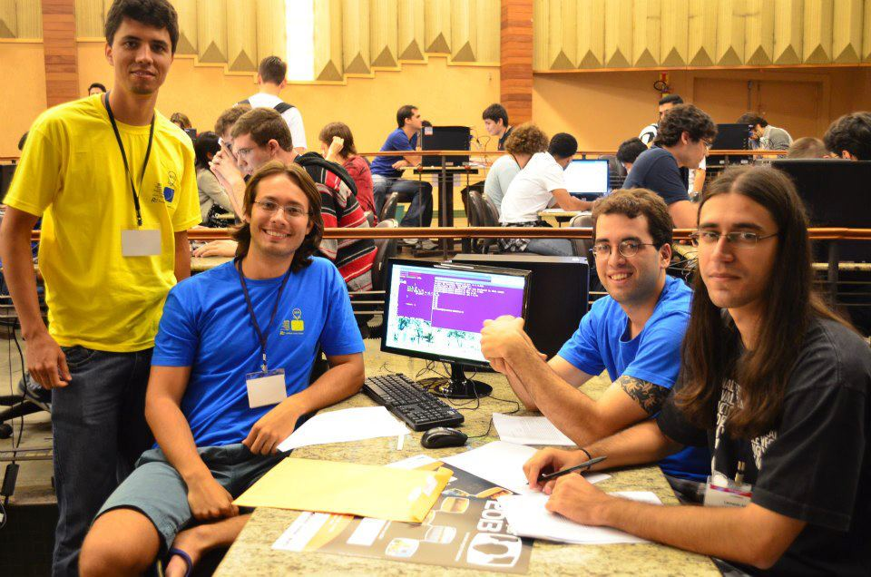

Leonardo de Sá Alt(){
Entrevista
Por: Guilherme Borges Oliveira

Equipe de maratona da UFU na Final Brasileira de 2012 em Londrina.
Da esquerda para a direita temos:
Lásaro Camargos (coach da equipe),
Thadeu Knychala Tucci,
Enrique Fynn e Leonardo de Sá Alt.
printf: Poderia nos falar um pouco sobre a sua formação?
Leonardo: Me graduei em Ciência da Computação pela UFU em 2010, onde meu TCC foi feito junto com a IC na área de Inteligência Artificial (Criptografia baseada em Autômatos Celulares) com a Profa. Gina. Fiz o mestrado também com a Profa. Gina na UFU, em Teoria da Computação (Fundamentos de Autômatos Celulares). Trabalhei como desenvolvedor C++ na Cedro Finances com performance tuning, como desenvolvedor C/C++/Python na Kyros Tecnologia com processamento de imagens, e como professor substituto na FACOM/UFU.
Fui até ano passado competidor da ACM-ICPC (até o final do mestrado) e treinador de times iniciantes. Atualmente faço doutorado em Teoria da Computação (Verificação Formal) na USI - Università della Svizzera italiana.
printf: De onde surgiu seu interesse, há quanto tempo e em que contexto você se envolveu com Maratonas de Programação?
Leonardo: Se não me engano comecei a participar das Maratonas na metade da graduação, simplesmente porque parecia (e realmente é) divertido passar o sábado inteiro programando e competindo. Mas só comecei a treinar de verdade bastante tempo depois.
printf: Qual a importância e benefícios deste contato, tanto profissional quanto acadêmico?
Leonardo: Ao treinar pra Maratona, o competidor ganha muito conhecimento teórico, pois precisa por exemplo dominar muitos algoritmos (desde os clássicos até alguns mais "obscuros"), conhecer técnicas muitas vezes desconhecidas pela maioria, fazer análises de complexidade e otimizar algoritmos. Quanto à parte prática, bom, é uma competição de programação, portanto o competidor precisa ser capaz de implementar rápida e corretamente os algoritmos necessários. Por isso, ganha muita velocidade e aprende a desenvolver sob pressão.
printf: Qual é o melhor momento para se começar. Há a possibilidade de se considerar tarde para começar?
Leonardo: O mais rápido possível. Há sim possibilidade de se considerar tarde, pois as regras da principal competição mundial (ACM-ICPC) dizem que um aluno pode participar em um certo ano X se: ele está há no máximo 4 anos em seu primeiro curso de graduação OU completa no máximo 23 anos no ano X. Sendo assim, quanto antes o aluno começar a treinar (mesmo que saiba pouco ou não saiba programar ainda) para as Maratonas melhor, pois maiores são as chances de ele conseguir uma vaga para a Final Brasileira e para a Final Mundial. Mas no caso de alguém que está começando os treinamentos e já está quase sendo proibido de participar, é tarde apenas para a ACM-ICPC. Existem várias outras competições como por exemplo a Facebook Hacker Cup, Google Code Jam e competições isoladas patrocinadas no Top Coder que são de muita importância e não possuem este tipo de regra.
printf: De onde começar? Em sua opinião qual é a melhor metodologia de estudo/treino, livros, plataformas, entre outros?
Leonardo: Existe um livro chamado Competitive Programming, que esta em sua 3a versão, que é o melhor e mais usado hoje em dia no mundo todo. Ele contém capítulos sobre os principais assuntos cobrados em Maratonas, como: Grafos, Programação Dinâmica, Geometria Computacional, Estruturas de Dados, Processamento de Strings, etc. Pra cada assunto, ele divide o capítulo em vários subtópicos, dá uma breve explicação teórica, as vezes dá o código correspondente àquela técnica e cita alguns problemas do UVa Judge que necessitam desta técnica para serem resolvidos. Veja bem, para treinamento só o livro não basta, é necessário que o competidor vá atrás de mais conhecimento teórico sobre o assunto. É o material que recomendo.
Sugiro treinamento individual diário e simulações em time pelo menos uma vez a cada 15 dias. Se o competidor for iniciante, sugiro o portal URI Online Judge, excelente para iniciantes. O URI também é bom pra competidores mais avançados, mas pra esses sugiro o UVa Online Judge, pois é de longe o que contém mais problemas e, o mais importante, é totalmente linkado com o livro que sugeri. Quanto à linguagem, aprenda C++ (pelo menos a STL, que é realmente o que faz a diferença entre C e C++ nas maratonas). É claro que isso não é uma regra para todos, mas a maioria usa C++. Na competição você precisa unir velocidade de desenvolvimento com velocidade de execução. Por isso, dentre as 3 linguagens permitidas na competição ACM-ICPC (C, C++, Java), C++ é a mais equilibrada, pois a biblioteca padrão do C é pequena e Java é lento (não adianta falar que não é, é sim, deal with it).
printf: Como montar uma equipe?
Leonardo: Essa é uma questão realmente complicada. Geralmente os alunos tendem a montar os times (de 3 pessoas) com os amigos mais próximos. Ok, mas pra quem quer treinar de verdade, isso se torna um problema quando nem todos estão realmente focados e interessados, querendo realmente treinar. Portanto, tenha no seu time apenas competidores que realmente querem treinar, se esforçar. Mesmo sendo um time, o ideal é que todos os membros sejam bons em todas as áreas da competição: programação, matemática, raciocínio, algoritmos, etc. Caso isso não seja possível, tenha no seu time pelo menos um excelente programador e pelo menos um que saiba bastante matemática. Mas isso (o último caso) geralmente acontece com os times mais "velhos". Times de competidores iniciantes não devem se preocupar com isso, pois ainda tem vários anos de treino pela frente. Em 1 ou 2 anos espera-se que todos já sejam ou estejam ficando bons em todas as áreas.
printf: Baseado na sua experiência, como o mercado de trabalho vê os participantes de maratonas de programação?
Leonardo: Extremamente bem. Algo que sempre é dito quando tenta-se incentivar jovens competidores é que as atuais grandes empresas como Google, Facebook, etc, utilizam a Maratona como modo de recrutamento. As entrevistas (tanto online quanto presenciais) são muito parecidas com os problemas de maratona, além destas empresas terem suas próprias competições de programação (FHC e GCJ). Um exemplo local, a Algar há bastante tempo vem utilizando as maratonas para recrutamento, e mesmo as empresas que não utilizam as maratonas diretamente para seleção, sabem e consideram a diferença que isso faz para um programador.
Mas não é só o mercado de trabalho que valoriza a maratona. A Academia também valoriza muito as competições, tenho certeza de que as maratonas foram um grande diferencial e me ajudaram muito a ser aprovado no Doutorado aqui na Suíça. Como eu disse antes, um competidor que treina bastante é bom em programação, raciocínio, matemática, algoritmos, tem facilidade em aprender, sabe trabalhar sob pressão e é altamente esforçado. Independente se ele vai para o mercado ou para o meio acadêmico, quem não quer um profissional desses?
printf: Quanto à sua iniciativa de incentivar os alunos do primeiro período, quais eram seus objetivos e perspectivas e quais foram os resultados?
Leonardo: Primeiro meu objetivo era montar um grupo de iniciantes altamente interessados. Após essa etapa, que foi também uma etapa onde aprenderam a programar o básico, começaram os treinamentos semanais. O objetivo dos treinamentos é fazer os competidores obterem conhecimento sem parar, sobre todos os temas comuns em competições. Assim, continuar treinando as habilidades em programação e utilizar as técnicas aprendidas na resolução dos problemas. Apos isso já são capazes de treinar sozinhos. Na verdade eu não tinha ideia do que poderia acontecer, porque nunca tinha feito algo assim. Mas os resultados com certeza foram acima das minhas expectativas: nas competições em equipe, dos novos times formados, um foi campeão da maratona da Jornada da Computação UFU e outro foi premiado na 1a Maratona Mineira e por muito pouco não conseguiu vaga para a Final Brasileira 2012 em sua 1a participação na seletiva regional. Individualmente os competidores tiveram excelentes resultados e alguns deles foram premiados na última maratona organizada pela Algar (11a Maratona de Programação) pelos 2o, 3o, 6o e 10o lugares. Eu os "abandonei" no último passo, mas tenho certeza de que se sairão muito bem nas próximas maratonas, até porque agora contam com 3 treinadores: Enrique Fynn e Thadeu Tucci, meus ex-companheiros de time, e o Prof. Lásaro Camargos, que foi nosso treinador também. Pretendo começar a treinar alguns times aqui na minha nova universidade, e espero em não muito tempo enfrentar meus ex-alunos de maratona da UFU na Final Mundial :)
printf: Soubemos que você participou de um Curso de Verão relacionado a área, poderia nos dizer um pouco sobre ele (exige algum nível de conhecimento? há aulas? simulações? local, quantidade de dias, etc) e quais tipos de conhecimentos ele agrega?
Leonardo: Esse Curso de Verão é realizado para os times da América Latina que conseguiram vaga na Final Mundial, e times que se saíram bem nas Finais Nacionais são convidados a participar também. A escola é bastante puxada, o nível é bem alto. É indicado para times já experientes, que conseguiram a vaga para a Final Mundial ou que realmente esperam conseguir na próxima competição. Quando participei, foram 4 semanas na UNICAMP. Durante cada semana tínhamos um professor diferente, que foram ex-competidores de nível mundial, como o bicampeão Andrey Lopatin. A rotina era a mesma todos os dias: de manhã aula teórica e de tarde competição. Além das novas técnicas e algoritmos aprendidos, o que já era esperado, percebemos que esta rotina nos deu bastante resistência física (algo que programadores não costumam ter muito, certo? =] ) para as competições, o que realmente faz muita diferença ao tentar resolver um problema após fritar o cérebro por quase 5 horas. Algo que comentávamos, era que antigamente saíamos esgotados das competições, e após o curso de verão poderíamos competir por mais de 5 horas (tempo normal de uma competição) tranquilamente. Claro que isso não é o mais importante, mas foi algo que achamos bem curioso ao avaliar como foi o curso de verão. Resumindo, é excelente e recomendo para times mais experientes.
}